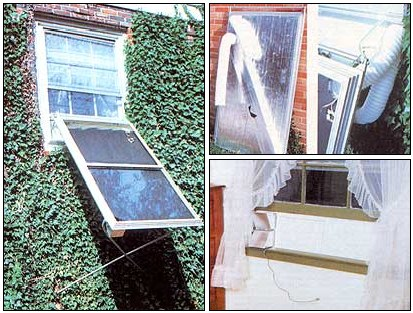

Storm Window Solar Panels
They're designed to keep the cold out, but you can use 'em to bring the warm in, too!
By the Mother Earth News editors
January/February 1984
Over the years, Mother's staff tinkerers have come up with a variety of solar devices, most of which have been designed for those who want to give the sun a try without incurring a lot of expense. But then-after all of our past efforts - whenever we tried to come up with some original solar projects, we were stumped for ideas. (Was there really nothing more new under the sun?)
But all of a sudden, our researchers hit upon the idea of using salvaged aluminum storm window frames as the basis of a low-cost, weather-resistant, simple-to-assemble hot-air collector - and a promising, economical approach to backyard solar technology was born. After all, the triple-trackers seem almost custom-suited to the application, since they're [1] preformed in perfect shallow "collector shape," [2] made of lightweight, durable, heat-resistant material (a stagnant wooden collector can, over time, start to smolder), [3] already equipped with precut, tight-fitting glass, and [4] commercially fabricated, giving them a finished "marketplace" appearance.
On top of all this, secondhand frames - at least the ones appropriate for this project - can often be obtained for a few bucks apiece. Many people are upgrading their windows' weatherizers with new or color-coordinated storm fixtures, meaning that plenty of old-but-sound frames are finding their way into the trash or to salvage houses. Even sashes that are missing a pane can be recycled. In fact, a shrewd buyer could probably pick up such "worthless" castoffs for next to nothing and replace the damaged glass with sheets cannibalized from other junk windows!
However you acquire the materials for a storm window solar panel, all that does matter is that you locate two frames of the same size and come up with enough glazing to seal one of them tightly. Remember, though, that it's to your advantage to search for large units (they don't have to fit your own home's windows), since they'll naturally offer more absorber surface area.
Once you've latched on to one or more pairs of equal-sized storm sashes, you'll need only to come up with a few more items - which we've specified in our list of materials - to make your solar project a success. The back of the collector and its absorber is a single sheet of 1-inch foil-faced rigid foam insulation board. The inlet and outlet ducts consist of 4-inch holes cut in that board at opposite ends. A thermostatically controlled box fan draws air through the collector and exhausts it into the room. And a couple of clothes-dryer fittings, some flexible hose and a channel made from sections of insulation board complete the connection between the air ducts in the collector and those in the living area.
To attach your solar storm window as effortlessly as possible, you'll probably want to use an installation similar to the one shown in our photographs. The collector mount is an adjustable board assembly designed to fit in the tracks of any partially open double-hung window. Once the sash is closed tightly against this insert (foam stripping at the joint will assure a weathertight seal), it's sturdy enough to support the weight of the solar panel on the two brackets extending from its outside face. To help give the aluminum collector walls some structural support, a tubular framework is fastened to the edges of the panel "sandwich," and - to hold the unit at an optimal angle to the sun - a pair of rubber-tipped legs stretch between the frame and the house's exterior.
Begin construction of the collector by laying a screenless and windowless aluminum frame mounting face up on a flat surface. Measure the width and height of the sash opening (where the framed glass panes normally go), and then cut your foil-covered insulation board to those dimensions, using a utility knife.
Next, cut a 4-inch-diameter opening in one corner of the board (be sure to leave at least an inch or so margin from the edges), then remove a 4-inch-square plug from the sheet's diagonally opposite corner. By slicing three long, narrow strips (two 2-inch wide and one 6-inch wide) from your leftover insulation material and using aluminum foil tape to join those pieces together, you can then make a simple heat-retaining passageway between what will be the collector's lower (intake) duct and a point about 3 inches from its upper one. (We found that the easiest way to do this was to first determine the tunnel's necessary length, cut the strips to fit, join them in a three-sided channel, and then tape the entire assembly to the surface of the board after that insulation sheet had been installed within its aluminum frame.)
Before you do that, though, it'd be a good idea to put the square-to-round dryer-duct fitting you purchased in place over its upper corner opening and secure it with some silicone sealant. Then you can go ahead and coat the absorber surface with high-temperature flat black paint and complete the installation, again using a continuous bead of silicone sealant as a bond. With that done, it's a simple matter to secure the insulated channel- making sure the lower duct is covered - and trim out some end caps that'll fasten neatly over the tube's open tips. (A strip of foil tape placed over each 4-inch duct's cut edge will protect the foam insulation from the long-term effects of heat.)
The dryer vent kit you bought should contain about 10" of sheet-aluminum pipe. Cut several inches from it and install it in the upper end of the channel. The remaining piece of pipe can be cut in half and used later on.
At this point you can join the glass face to the collector frame. First, check to make certain the panes are, locked securely in their slots, then go ahead and seal all of the joints - including the one between the windows - with silicone. Run a bead of caulk (or lay sections of weatherstripping) along the frame's faces, then fasten the halves together at the top and bottom flanges with some bolts or self-tapping screws. Take care to orient the glass so the upper pane overlaps the lower and thus sheds rainwater rather than catching it.
The tubular framework that helps to hold the collector at the correct sun-catching angle is constructed of appropriate lengths of half-inch electrical metallic tubing (E.M.T.). Five-foot-long side rails were just about right for the 36-by-62-inch frames we were working on. With those bolted through the right and left edges of the storm fixtures so that about 2 inches of E.M.T. protruded above both top sides of the collector, it was easy to determine the length of conduit necessary to connect those two stubs. The joints were secured by cutting the heads from two 1/4-inch bolts and bending hooks in their shanks. These "claws" could then be slipped into holes drilled in the cross pipe, and their threaded ends could be passed through openings bored in the side rails and secured with nuts.
At the lower ends of the two side rails, wing nuts slipped inside each tube served as a "catch" for the 1/4-by-3/4-inch bolts that hold the lower support legs in place. Those half-inch E.M.T. props are offset at one end so they'll crisscross, and bolt together, in the middle for added stability. (Naturally, the dimensions of this "X" brace will depend upon the size of your completed collector and your home's latitude. Just remember that the ideal winter angle for your sun grabber's surface is that latitude plus 10 degrees.)
Congratulations! The collector itself is now complete, so it's time to move on to the insert that fits in the grooves of your home's window. This wooden "plug" supports the collector from the top and houses the blower fan, along with the air supply and return ducts. To make it, simply cut a section of 1/2-inch plywood to 12-by-20-inch and 12-by-26-inch dimensions, then fasten a 1-by-1-by-20-inch piece of 16-gauge angle iron to each edge of the longer board - flush with one end - so the other slab can slide snugly into the track you've created. Bolster the outer ends of each board with 1/2-inch spacers (the long one will take a 3/4-inch-wide strip, and the short one a hunk about 3 inches wide) tacked in place on sides opposite each other.
Next, using your two remaining dryer duct pipes as templates, trace and cut out openings in the longer piece of plywood that are 2 1/2 inches apart and at least 2 inches from the window-frame end of the board. Seal and tack the metal collars into these holes so they extend to the home's outside (away from the angle iron tracks), then bolt a shelf-and-pole bracket to each of the sliding boards. (Fasten one to the 1/2-by-3-by-12-inch spacer, and the other about 2 inches to the inside of the ducts.) A No. 6 3/4-inch roundhead wood screw threaded through the interior panel and forced into the exterior one will keep the sliding insert from slipping once it's placed within the window tracks.
The way you utilize your blower fan is a matter of preference. If it has limited delivery (under 100 cubic feet per minute), it can be mounted to the upper insert duct and connected, with dryer hose, to the fitting on the collector's air channel. This will draw air in from the middle of the room, feed it to the bottom of the collector, allow it to flow upward along the absorber face, exit it out the corner duct, and return it to the house via the dryer hose connected to the lower window vent. Alternatively, if your fan has more than enough capacity, it can be fastened over the lower window duct and used to suck air through the system, with the supply and return tubes reversed. This will slow down the flow - and further heat the air - but be forewarned that you'll sacrifice some efficiency by doing so.
Either way the fan is mounted, its thermostatic control should be wired in, as shown in our diagram, and that unit should be fed through the corner duct tube and allowed to rest on the absorber surface. Some protective housings - bent from sheet aluminum like those shown in the photo - can be used to cover the window vents if you want to avoid the expense of purchasing louvered grilles, and homemade foam-rubber plugs will keep those openings from leaking cold air in the evenings. (If you live in a particularly cold climate, you'll also want to insulate the dryer hoses by wrapping batts or foam around them and covering that with duct tape. You could also seal the joints between the insert and the window with weatherstripping, and you might even want to glue scraps of insulation board to the surface of the plywood.)
Are the storm window suncatchers worth building? You'll have to answer that question for yourself. Each of the three units we completed cost us, on the average, under $50 to build, with all materials being new except for the windows. We expect the heaters to last for at least five years. And our initial tests indicate that on a clear or partly cloudy day they're capable of delivering 120 degrees Fahrenheit air to the house for perhaps six hours.
We're not about to tell you that storm window collectors are super-efficient, but they definitely do work and are among the simplest-to- make collectors you could ever build. Yes sir, for the value of time and materials that you'll put into them, these, "Btu bargains" just might be among the nicest introductions to bootstrap solar technology that you'll run across!
|
 MOTHER EARTH NEWS STAFF Clockwise from left: Because the collector is made from storm window frames, it'll match the exterior of almost any home. Foil- faced insulation board makes up the panel's rear surface. The collector's tubular framework hangs from a pair of shelf brackets. An adjustable insert makes for easy installation. |
 MOTHER EARTH NEWS STAFF List of materials for Mother's Storm Window Solar Panels. |
|